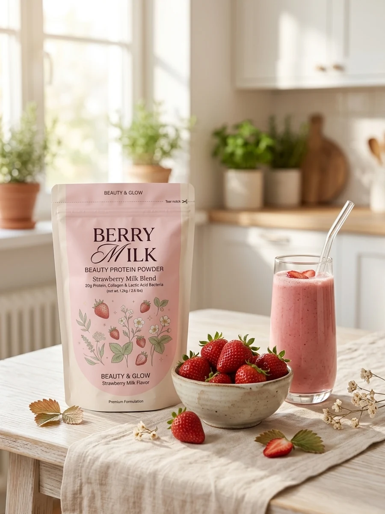
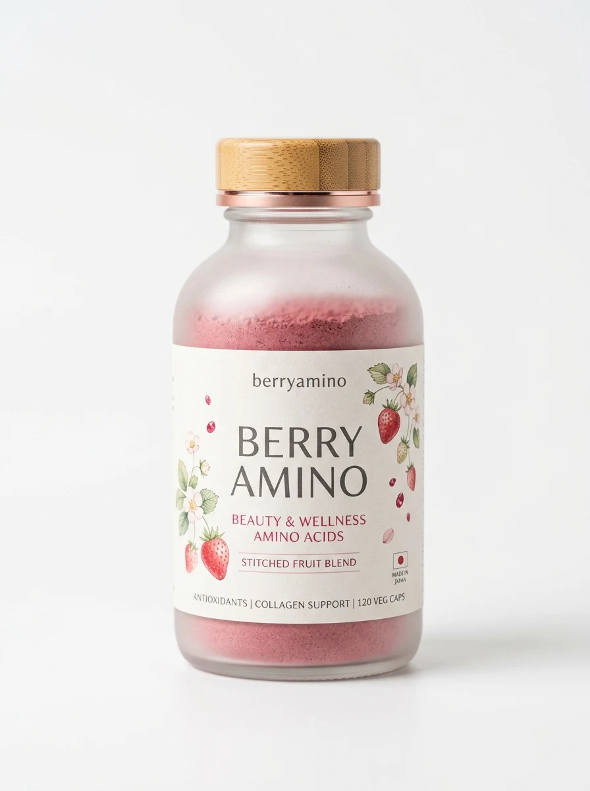
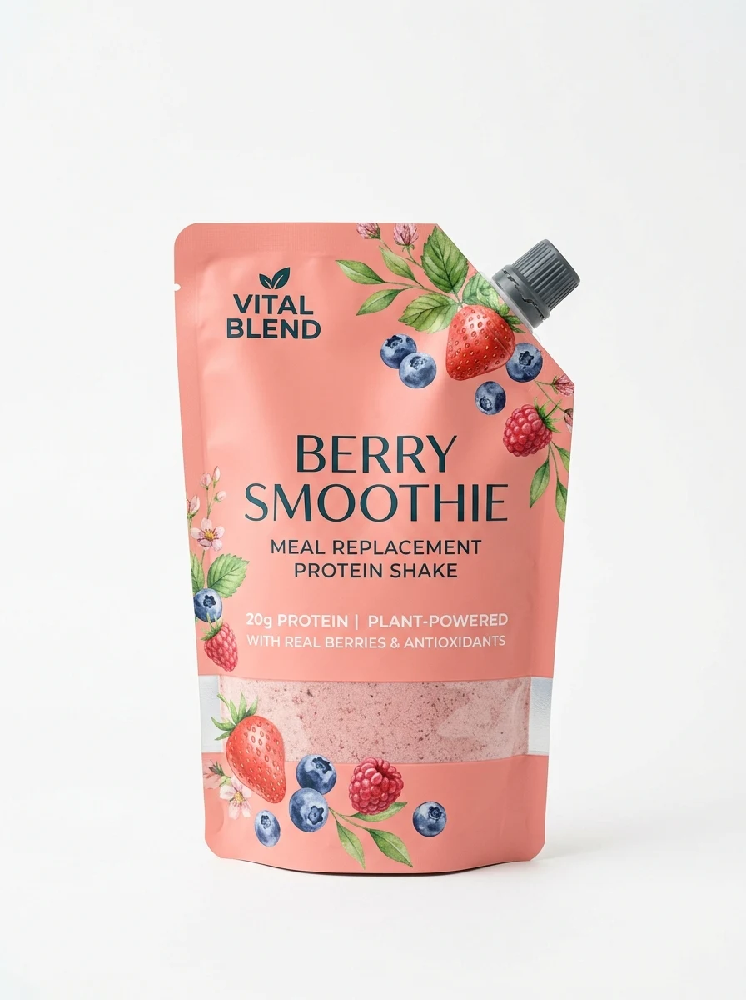

01
しなやかに引き締める
ボディ
美しく引き締まった、しなやかな土台づくり。
吸収の早いホエイプロテインと、腹持ちが良く女性ホルモンに寄り添うソイプロテインをベストバランスでW配合。ムキムキではなく女性らしいメリハリのある美シルエットを育みます。
- Wプロテイン
- 20g
- BCAA
- 3,800mg
- 1食あたりカロリー
- 98kcal

 WOMEN'S BEAUTY PROTEIN
WOMEN'S BEAUTY PROTEIN
女性に必要なのは、しなやかさ × うるおい × 軽やかさ。
毎朝が楽しみに変わる、完熟あまおう苺ミルクの贅沢な新常識。
BERRY MILK を公式ショップでチェックわたしを満たす、ご褒美プロテイン
「しなやかに引き締める」ボディメイクの土台をつくりながら、女性が毎日気になる【美容・うるおい】と、翌朝のすっきりを支える【腸活・リカバリー】までトータル設計。我慢して飲む時代は終わり。毎日が愛おしくなる、新しいインナーケア習慣です。
01
しなやかに引き締める
美しく引き締まった、しなやかな土台づくり。
吸収の早いホエイプロテインと、腹持ちが良く女性ホルモンに寄り添うソイプロテインをベストバランスでW配合。ムキムキではなく女性らしいメリハリのある美シルエットを育みます。
02
内側から潤う
飲む美容液発想。肌・髪・爪までツヤやかに。
吸収性の高い低分子フィッシュコラーゲン1,500mgに加え、ヒアルロン酸・セラミド・1日分のビタミンCを贅沢配合。タンパク質と一緒に摂ることで、美容成分の巡りを最大限に高めます。
03
翌朝を軽やかに
腸活でため込まない、軽やかな毎日。
生きたまま届く植物性ナノ乳酸菌1,000億個と水溶性食物繊維を配合。女性に不足しがちな鉄分と葉酸も1日分しっかりカバー。翌朝のすっきりと毎日の軽快なコンディションを叶えます。

ベリーミルク プロテイン｜完熟とろける苺ミルク味
水で割るだけで、まるでカフェの贅沢いちごオレ。
福岡県産あまおう苺果汁パウダーを贅沢に使用。従来のプロテインにありがちな「粉っぽさ」「人工的な甘さ」を徹底的になくし、ジューシーな甘酸っぱさと濃厚なミルクのコクを両立しました。朝の置き換えにも、運動後のご褒美にも、毎日飲みたくなる美味しさです。
¥4,980税込（送料無料）

DELICIOUS SECRET
カフェで味わうような、芳醇で優しい苺ミルクのひととき。
私たちが目指したのは、サプリメントではなく「毎朝一番に飲みたくなるご褒美スイーツ」のような美味しさ。厳選したあまおう苺果汁の爽やかな香りと、北海道産スキムミルクの自然な甘みが調和し、サッと溶けてダマになりません。
フリーズドライ果汁パウダーをブレンド。果実本来の豊かな香りと酸味が口いっぱいに広がります。
独自のスプレードライ技術により、冷たい水やミルクでもダマにならず、なめらかな口当たりを実現。
豆乳やオーツミルクで割ったり、ヨーグルトやオートミールに混ぜても絶品。毎日の朝食が華やぎます。
 BERRY MILK BEAUTY PROTEIN
BERRY MILK BEAUTY PROTEIN
美味しく飲むだけで、しなやかなボディもうるおい肌も。毎日の自分を好きになる新習慣をはじめませんか？
BERRY SERIESあなたのライフスタイルに合わせて選べる、ベリーインナーケアシリーズ。
毎日の朝食・トレーニング後に
美ボディと美肌を育む、王道の苺ミルクWプロテイン。
Wプロテイン20g／コラーゲン1,500mg／乳酸菌1,000億個／あまおう苺味
¥4,980税込
詳細を見る
日中のうるおい・運動中の水分補給に
澄み渡る透明感をチャージする、高純度アミノ酸＆濃縮ベリー。
必須アミノ酸EAA／高濃度ビタミンC／クエン酸／すっきりルビーベリー味
¥3,980税込
詳細を見る
忙しい朝の置き換えダイエットに
チアシードと生酵素で満足感たっぷり。お腹すっきりスムージー。
ソイプロテイン15g／食物繊維7g／植物発酵エキス120種／ミックスベリー味
¥4,480税込
詳細を見る
おやすみ前のリラックスタイムに
GABA＆カモミール配合。質の高い睡眠と夜間のリカバリーをサポート。
カゼインプロテイン18g／GABA 100mg／グリシン／ラベンダーベリー味
¥4,780税込
詳細を見る私たちについて
開発ストーリー
女性開発チームの想いから誕生
「プロテインを飲みたいけれど、粉っぽくて美味しくない」「男性向けのものばかりで選びにくい」そんな女性たちのリアルな声からBERRY MILKは生まれました。栄養士とパティシエがタッグを組み、2年の歳月をかけて「毎日飲みたくなる至福の味」を完成させました。
開発秘話を読む品質への約束
国内GMP認定工場での徹底管理
大切なカラダに入れるものだからこそ、安心・安全には一切の妥協を許しません。医薬品レベルの厳格な製造基準を満たした国内GMP認定工場にて、原料の選定から製造・充填までを一貫管理。合成保存料・着色料は一切使用していません。
品質基準についてQ&A
朝食時（パンやシリアルと一緒に）、または運動後30分以内のゴールデンタイムが特におすすめです。また、間食のスイーツ代わりに飲むことで、不要な糖質を抑えながら美味しくタンパク質と美容成分を補給できます。
はい、水で溶かしても濃厚でまろやかな苺ミルク味をお楽しみいただけます。福岡県産あまおう苺果汁と北海道産スキムミルクパウダーを配合しているため、牛乳で割らなくてもカフェクオリティのコクがあります。もちろん豆乳やアーモンドミルクとの相性も抜群です。
ご安心ください。BERRY MILK PROTEINは1食わずか98kcal、糖質1.8g・脂質0.9gと非常にヘルシーです。ソイ（大豆）とホエイをブレンドしており、女性ホルモンのバランスとしなやかで引き締まったメリハリボディを目指す女性に最適な配合となっています。
BERRY MILK PROTEINは健康食品ですので、普段のお食事でタンパク質を補給するのと同様にお召し上がりいただけます。ただし、体質がデリケートな時期でもありますので、ご心配な場合はかかりつけの医師にご相談ください。
はい、併用いただけます。ラインナップの「BERRY AMINO」や「BERRY NIGHT」と組み合わせることで、24時間スキのないトータルインナーケアが可能です。